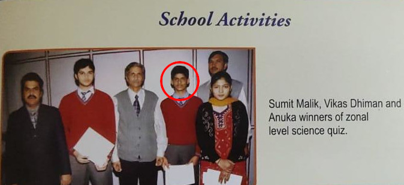
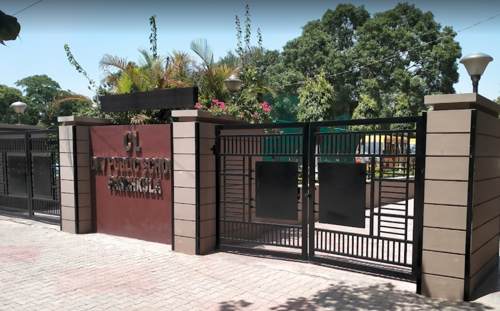
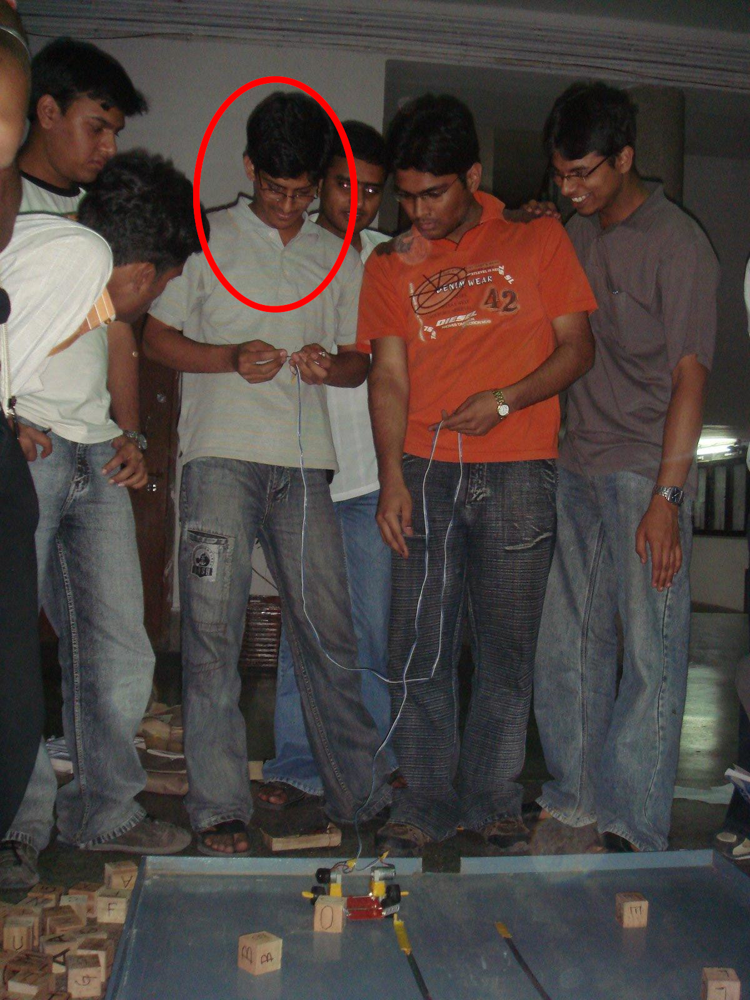
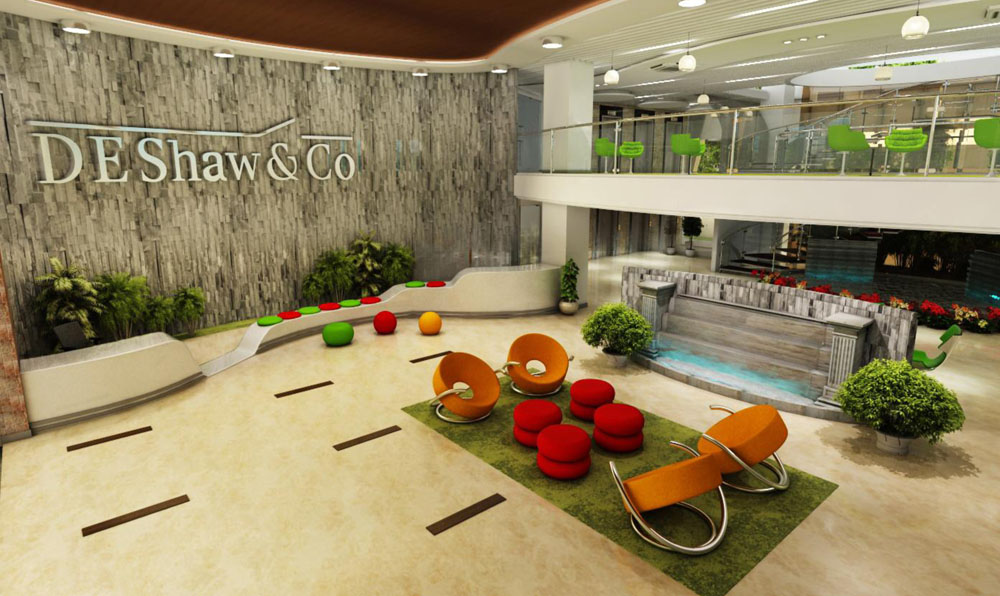
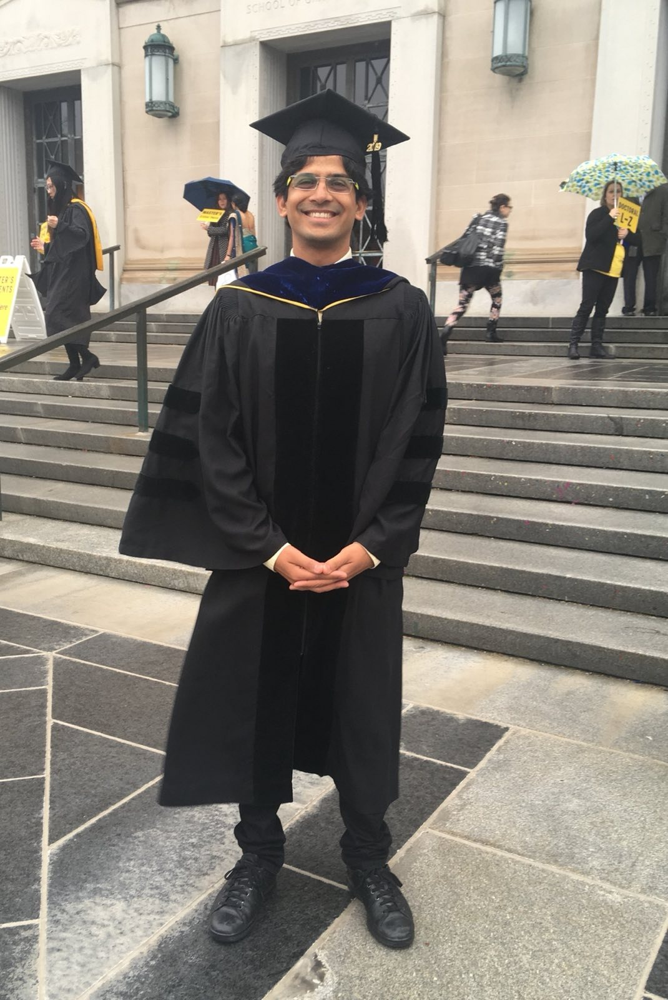
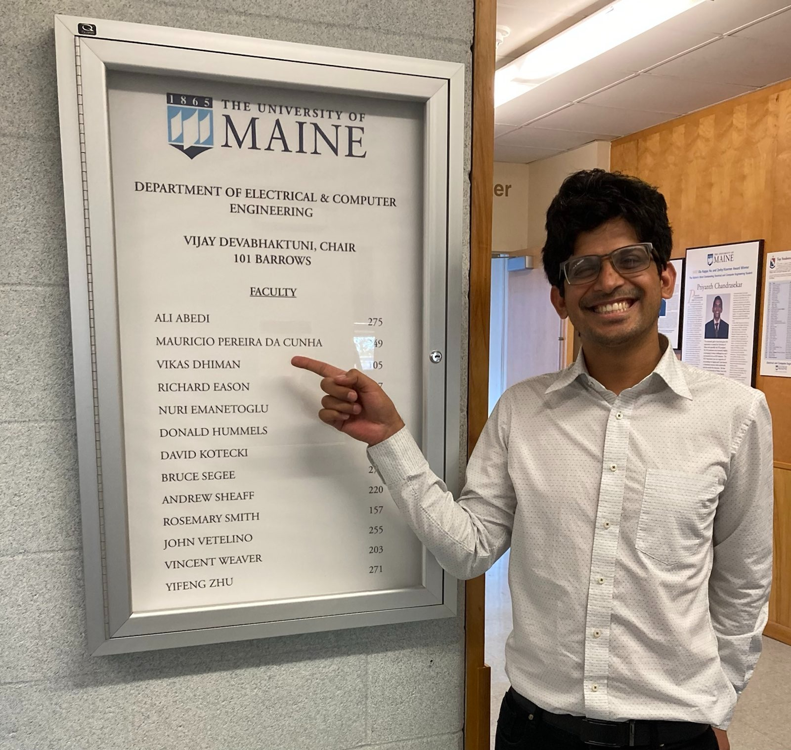
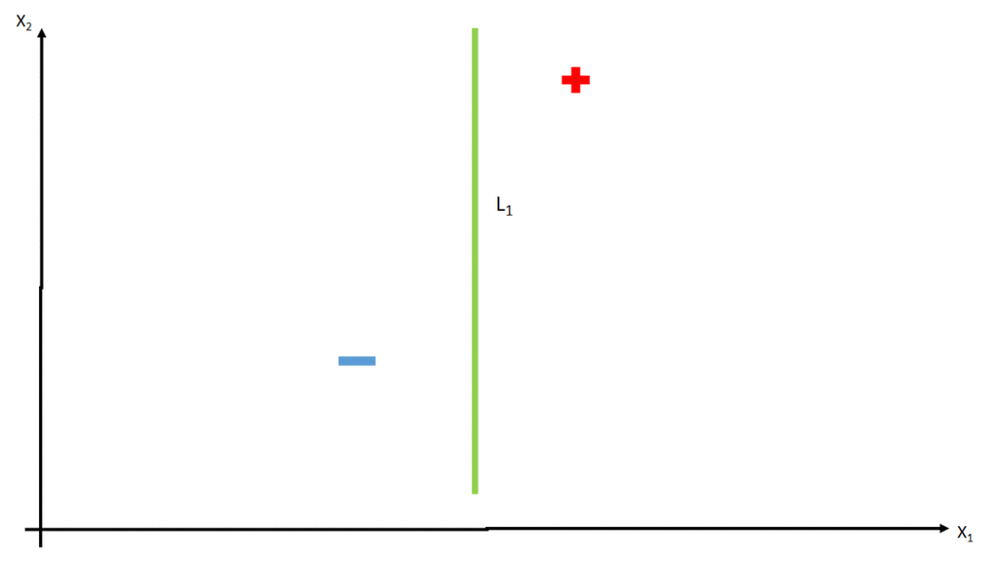

\(
\newcommand{\TODO}[1]{{\color{red}TODO: {#1}}}
\renewcommand{\vec}[1]{\mathbf{#1}}
\newcommand{\state}{\vec{x}}
\def\statet{\state_t}
\def\statetp{\state_{t-1}}
\def\statehist{\state_{1:t-1}}
\def\statetn{\state_{t+1}}
\def\obs{\meas}
\def\obst{\obs_t}
\def\act{a}
\def\actt{\act_t}
\def\acttp{\act_{t-1}}
\def\acttn{\act_{t+1}}
\def\Obs{\mathcal{O}}
\def\ObsEnc{\Phi_o}
\def\ObsProb{P_o}
\def\ObsFunc{C}
\def\ObsFuncFull{\ObsFunc(\statet, \actt) \rightarrow \obst}
\def\ObsFuncInv{\ObsFunc^{-1}}
\def\ObsFuncInvFull{\ObsFuncInv(\obst, \statetp, \actt) \rightarrow \statet}
\def\StateSp{\mathcal{X}}
\def\Action{\mathcal{A}}
\def\TransP{P_{T}}
\def\Trans{T}
\def\TransFull{\Trans(\statet, \actt) \rightarrow \statetn}
\def\TransObs{T_c}
\def\Rew{R}
\def\rew{r}
\def\rewards{\vec{r}_{1:t}}
\def\rewt{\rew_t}
\def\rewtp{\rew_{t-1}}
\def\rewtn{\rew_{t+1}}
\def\RewFull{\Rew(\statet, \actt) \rightarrow \rewtn}
\def\TransObsFull{\TransObs(\statet, \obst, \actt, \rewt; \theta_T) \rightarrow \statetn}
\def\Value{V}
\def\pit{\pi_t}
\def\piDef{\pi(\acttn|\statet, \obst, \actt, \rewt; \theta_\pi) \rightarrow \pit(\acttn ; \theta_\pi)}
\def\Valuet{\Value_t}
\def\ValueDef{\Value(\statet, \obst, \actt, \rewt; \theta_\Value) \rightarrow \Valuet(\theta_\Value)}
\def\R{\mathbb{R}}
\def\E{\mathbb{E}}
\newcommand{\Goal}{\mathcal{G}}
\newcommand{\goalRV}{G}
\newcommand{\meas}{z}
\newcommand{\measurements}{\vec{\meas}_{1:t}}
\newcommand{\meast}[1][t]{\meas_{#1}}
\newcommand{\param}{\theta}
\newcommand{\policy}{\pi}
\newcommand{\graph}{G}
\newcommand{\vtces}{V}
\newcommand{\edges}{E}
\newcommand{\st}{\state}
\newcommand{\stn}{\st_{t+1}}
\newcommand{\stt}{\st_t}
\newcommand{\stk}{\st_k}
\newcommand{\stj}{\st_j}
\newcommand{\sti}{\st_i}
\newcommand{\St}{\mathcal{S}}
\newcommand{\Act}{\mathcal{A}}
\newcommand{\acti}{\act_i}
\newcommand{\lpt}{\delta}
\newcommand{\trans}{P_T}
\newcommand{\Q}{\qValue}
\newcommand{\fwcost}{Q}
\newcommand{\fw}{\fwcost}
\newcommand{\qValue}{Q}
\newcommand{\prew}{\Upsilon}
\newcommand{\epiT}{T}
\newcommand{\vma}{\alpha_\Value}
\newcommand{\qma}{\alpha_\qValue}
\newcommand{\prewma}{\alpha_\prew}
\newcommand{\fwma}{\alpha_\fwcost}
\newcommand{\maxValueBeam}{\vec{\state}_{\Value:\text{max}(m)}}
\newcommand{\nil}{\emptyset}
\newcommand{\discount}{\gamma}
\newcommand{\minedgecost}{\fwcost_0}
\newcommand{\goal}{g}
\newcommand{\pos}{x}
%\newcommand{\fwargs}[5]{\fw_{#4}^{#5}\left({#3}\middle|{#1}, {#2}\right)}
\newcommand{\fwargs}[5]{\fw_{#4}^{#5}\left({#1}, {#2}, {#3}\right)}
\newcommand{\Rgoal}{R_{\text{goal}}}
\newcommand{\Loo}{Latency-1:\textgreater1}
\newcommand{\Loss}{\mathcal{L}}
\newcommand{\LossText}[1]{\Loss_{\text{#1}}}
\newcommand{\LossDDPG}{\LossText{ddpg}}
\newcommand{\LossStep}{\LossText{step}}
\newcommand{\LossLo}{\LossText{lo}}
\newcommand{\LossUp}{\LossText{up}}
\newcommand{\LossTrieq}{\LossText{trieq}}
\newcommand{\tgt}{\text{tgt}}
\newcommand{\Qstar}{\Q_{*}}
\newcommand{\Qtgt}{\Q_{\text{tgt}}}
\newcommand{\ytgt}{y_t}
% Symbols
\newcommand{\ctrl}{\vec{u}}
\newcommand{\Ctrl}{\mathcal{U}}
\newcommand{\Data}{\mathcal{D}}
\newcommand{\stdt}{\dot{\state}}
\newcommand{\StDt}{\dot{\StateSp}}
\newcommand{\dynSt}{f}
\newcommand{\dynCt}{g}
\newcommand{\bDynSt}{\bar{\dynSt}}
\newcommand{\bDynCt}{\bar{\dynCt}}
\newcommand{\dynAff}{F}
\newcommand{\bDynAff}{\bar{\dynAff}}
\newcommand{\ctrlaff}{\underline{\mathbf{\ctrl}}}
\newcommand{\smallbmat}[1]{\left[\begin{smallmatrix}#1\end{smallmatrix}\right]}
\newcommand{\Knl}{K}
\newcommand{\knl}{\kappa}
\newcommand{\bKx}{k_\state}
\newcommand{\bKF}{k_\dynAff}
\newcommand{\bKFu}{k_{\dynAff\ctrl}}
\newcommand{\bKFx}{k_{\dynAff\state}}
\newcommand{\bKFux}{k_{\dynAff\ctrl\state}}
\newcommand{\covf}{\text{cov}}
\newcommand{\dt}{\delta t}
\newcommand{\dSt}{\stdt}
\newcommand{\N}{\mathcal{N}}
\newcommand{\StDat}{\mathbf{X}}
\newcommand{\StDtDat}{\dot{\mathbf{X}}}
\newcommand{\CtDat}{\underline{\boldsymbol{\mathcal{U}}}_{1:k}}
\newcommand{\mat}[1]{{#1}}
\newcommand{\Y}{\mat{Y}}
\newcommand{\bY}{\bar{\Y}}
\newcommand{\W}{\mat{W}}
\newcommand{\V}{\mat{V}}
\newcommand{\mH}{\mat{H}}
\newcommand{\KH}{\Knl^\mH}
\newcommand{\kH}{\knl^\mH}
\newcommand{\GP}{\mathcal{GP}}
\newcommand{\kDA}{\knl^\dynAff}
\newcommand{\KDA}{\Knl^\dynAff}
%\newcommand{\M}{\mathcal{M}}
\newcommand{\kh}{\knl^{\dynAff\ctrlaff}}
\newcommand{\KDat}{\mathfrak{K}}
\newcommand{\kDat}{\bm{\knl}}
\newcommand{\KhDat}{\KDat^{\dynAff\ctrlaff}}
\newcommand{\khDADat}{\kDat^{\dynAff\ctrlaff\dynAff}}
\newcommand{\khDA}{\knl^{\dynAff\ctrlaff\dynAff}}
\newcommand{\dynAffDat}{\mathbf{\dynAff}}
\newcommand{\grad}{\nabla}
\newcommand{\Lie}{\mathcal{L}}
\newcommand{\tdf}{\tilde{f}}
\newcommand{\tdg}{\tilde{g}}
\newcommand{\barf}{\bar{f}}
\newcommand{\barg}{\bar{g}}
\newcommand{\erf}{\textit{erf}}
\newcommand{\etal}{et~al.}
\newcommand{\CBC}{\mbox{CBC}}
\newcommand{\CBCtwo}{\CBC^{(2)}}
\newcommand{\CBCr}{\CBC^{(r)}}
\newcommand{\Prob}{\mathbb{P}}
\newcommand{\tdbff}{\bff^*_k}
\newcommand{\mDynAffs}{\bfM_k}
\newcommand{\bfBs}{\bfB_k}
\DeclareMathOperator{\vect}{\textit{vec}}
\DeclareMathOperator{\diag}{\mathbf{diag}}
\DeclareMathOperator{\cov}{cov}
\DeclareMathOperator{\Cov}{\mathbf{Cov}}
\DeclareMathOperator{\Var}{Var}
% Calligraphic fonts
\newcommand{\calA}{{\cal A}}
\newcommand{\calB}{{\cal B}}
\newcommand{\calC}{{\cal C}}
\newcommand{\calD}{{\cal D}}
\newcommand{\calE}{{\cal E}}
\newcommand{\calF}{{\cal F}}
\newcommand{\calG}{{\cal G}}
\newcommand{\calH}{{\cal H}}
\newcommand{\calI}{{\cal I}}
\newcommand{\calJ}{{\cal J}}
\newcommand{\calK}{{\cal K}}
\newcommand{\calL}{{\cal L}}
\newcommand{\calM}{{\cal M}}
\newcommand{\calN}{{\cal N}}
\newcommand{\calO}{{\cal O}}
\newcommand{\calP}{{\cal P}}
\newcommand{\calQ}{{\cal Q}}
\newcommand{\calR}{{\cal R}}
\newcommand{\calS}{{\cal S}}
\newcommand{\calT}{{\cal T}}
\newcommand{\calU}{{\cal U}}
\newcommand{\calV}{{\cal V}}
\newcommand{\calW}{{\cal W}}
\newcommand{\calX}{{\cal X}}
\newcommand{\calY}{{\cal Y}}
\newcommand{\calZ}{{\cal Z}}
% Sets:
\newcommand{\setA}{\textsf{A}}
\newcommand{\setB}{\textsf{B}}
\newcommand{\setC}{\textsf{C}}
\newcommand{\setD}{\textsf{D}}
\newcommand{\setE}{\textsf{E}}
\newcommand{\setF}{\textsf{F}}
\newcommand{\setG}{\textsf{G}}
\newcommand{\setH}{\textsf{H}}
\newcommand{\setI}{\textsf{I}}
\newcommand{\setJ}{\textsf{J}}
\newcommand{\setK}{\textsf{K}}
\newcommand{\setL}{\textsf{L}}
\newcommand{\setM}{\textsf{M}}
\newcommand{\setN}{\textsf{N}}
\newcommand{\setO}{\textsf{O}}
\newcommand{\setP}{\textsf{P}}
\newcommand{\setQ}{\textsf{Q}}
\newcommand{\setR}{\textsf{R}}
\newcommand{\setS}{\textsf{S}}
\newcommand{\setT}{\textsf{T}}
\newcommand{\setU}{\textsf{U}}
\newcommand{\setV}{\textsf{V}}
\newcommand{\setW}{\textsf{W}}
\newcommand{\setX}{\textsf{X}}
\newcommand{\setY}{\textsf{Y}}
\newcommand{\setZ}{\textsf{Z}}
% Vectors
\newcommand{\bfa}{\mathbf{a}}
\newcommand{\bfb}{\mathbf{b}}
\newcommand{\bfc}{\mathbf{c}}
\newcommand{\bfd}{\mathbf{d}}
\newcommand{\bfe}{\mathbf{e}}
\newcommand{\bff}{\mathbf{f}}
\newcommand{\bfg}{\mathbf{g}}
\newcommand{\bfh}{\mathbf{h}}
\newcommand{\bfi}{\mathbf{i}}
\newcommand{\bfj}{\mathbf{j}}
\newcommand{\bfk}{\mathbf{k}}
\newcommand{\bfl}{\mathbf{l}}
\newcommand{\bfm}{\mathbf{m}}
\newcommand{\bfn}{\mathbf{n}}
\newcommand{\bfo}{\mathbf{o}}
\newcommand{\bfp}{\mathbf{p}}
\newcommand{\bfq}{\mathbf{q}}
\newcommand{\bfr}{\mathbf{r}}
\newcommand{\bfs}{\mathbf{s}}
\newcommand{\bft}{\mathbf{t}}
\newcommand{\bfu}{\mathbf{u}}
\newcommand{\bfv}{\mathbf{v}}
\newcommand{\bfw}{\mathbf{w}}
\newcommand{\bfx}{\mathbf{x}}
\newcommand{\bfy}{\mathbf{y}}
\newcommand{\bfz}{\mathbf{z}}
\newcommand{\bfalpha}{\boldsymbol{\alpha}}
\newcommand{\bfbeta}{\boldsymbol{\beta}}
\newcommand{\bfgamma}{\boldsymbol{\gamma}}
\newcommand{\bfdelta}{\boldsymbol{\delta}}
\newcommand{\bfepsilon}{\boldsymbol{\epsilon}}
\newcommand{\bfzeta}{\boldsymbol{\zeta}}
\newcommand{\bfeta}{\boldsymbol{\eta}}
\newcommand{\bftheta}{\boldsymbol{\theta}}
\newcommand{\bfiota}{\boldsymbol{\iota}}
\newcommand{\bfkappa}{\boldsymbol{\kappa}}
\newcommand{\bflambda}{\boldsymbol{\lambda}}
\newcommand{\bfmu}{\boldsymbol{\mu}}
\newcommand{\bfnu}{\boldsymbol{\nu}}
\newcommand{\bfomicron}{\boldsymbol{\omicron}}
\newcommand{\bfpi}{\boldsymbol{\pi}}
\newcommand{\bfrho}{\boldsymbol{\rho}}
\newcommand{\bfsigma}{\boldsymbol{\sigma}}
\newcommand{\bftau}{\boldsymbol{\tau}}
\newcommand{\bfupsilon}{\boldsymbol{\upsilon}}
\newcommand{\bfphi}{\boldsymbol{\phi}}
\newcommand{\bfchi}{\boldsymbol{\chi}}
\newcommand{\bfpsi}{\boldsymbol{\psi}}
\newcommand{\bfomega}{\boldsymbol{\omega}}
\newcommand{\bfxi}{\boldsymbol{\xi}}
\newcommand{\bfell}{\boldsymbol{\ell}}
% Matrices
\newcommand{\bfA}{\mathbf{A}}
\newcommand{\bfB}{\mathbf{B}}
\newcommand{\bfC}{\mathbf{C}}
\newcommand{\bfD}{\mathbf{D}}
\newcommand{\bfE}{\mathbf{E}}
\newcommand{\bfF}{\mathbf{F}}
\newcommand{\bfG}{\mathbf{G}}
\newcommand{\bfH}{\mathbf{H}}
\newcommand{\bfI}{\mathbf{I}}
\newcommand{\bfJ}{\mathbf{J}}
\newcommand{\bfK}{\mathbf{K}}
\newcommand{\bfL}{\mathbf{L}}
\newcommand{\bfM}{\mathbf{M}}
\newcommand{\bfN}{\mathbf{N}}
\newcommand{\bfO}{\mathbf{O}}
\newcommand{\bfP}{\mathbf{P}}
\newcommand{\bfQ}{\mathbf{Q}}
\newcommand{\bfR}{\mathbf{R}}
\newcommand{\bfS}{\mathbf{S}}
\newcommand{\bfT}{\mathbf{T}}
\newcommand{\bfU}{\mathbf{U}}
\newcommand{\bfV}{\mathbf{V}}
\newcommand{\bfW}{\mathbf{W}}
\newcommand{\bfX}{\mathbf{X}}
\newcommand{\bfY}{\mathbf{Y}}
\newcommand{\bfZ}{\mathbf{Z}}
\newcommand{\bfGamma}{\boldsymbol{\Gamma}}
\newcommand{\bfDelta}{\boldsymbol{\Delta}}
\newcommand{\bfTheta}{\boldsymbol{\Theta}}
\newcommand{\bfLambda}{\boldsymbol{\Lambda}}
\newcommand{\bfPi}{\boldsymbol{\Pi}}
\newcommand{\bfSigma}{\boldsymbol{\Sigma}}
\newcommand{\bfUpsilon}{\boldsymbol{\Upsilon}}
\newcommand{\bfPhi}{\boldsymbol{\Phi}}
\newcommand{\bfPsi}{\boldsymbol{\Psi}}
\newcommand{\bfOmega}{\boldsymbol{\Omega}}
% Blackboard Bold:
\newcommand{\bbA}{\mathbb{A}}
\newcommand{\bbB}{\mathbb{B}}
\newcommand{\bbC}{\mathbb{C}}
\newcommand{\bbD}{\mathbb{D}}
\newcommand{\bbE}{\mathbb{E}}
\newcommand{\bbF}{\mathbb{F}}
\newcommand{\bbG}{\mathbb{G}}
\newcommand{\bbH}{\mathbb{H}}
\newcommand{\bbI}{\mathbb{I}}
\newcommand{\bbJ}{\mathbb{J}}
\newcommand{\bbK}{\mathbb{K}}
\newcommand{\bbL}{\mathbb{L}}
\newcommand{\bbM}{\mathbb{M}}
\newcommand{\bbN}{\mathbb{N}}
\newcommand{\bbO}{\mathbb{O}}
\newcommand{\bbP}{\mathbb{P}}
\newcommand{\bbQ}{\mathbb{Q}}
\newcommand{\bbR}{\mathbb{R}}
\newcommand{\bbS}{\mathbb{S}}
\newcommand{\bbT}{\mathbb{T}}
\newcommand{\bbU}{\mathbb{U}}
\newcommand{\bbV}{\mathbb{V}}
\newcommand{\bbW}{\mathbb{W}}
\newcommand{\bbX}{\mathbb{X}}
\newcommand{\bbY}{\mathbb{Y}}
\newcommand{\bbZ}{\mathbb{Z}}
\newcommand{\CBCr}{\mbox{CBC}^{(r)}}
\)
\(
\newenvironment{proof}{\paragraph{Proof:}}{\hfill$\square$}
%\newtheorem{theorem}{Theorem}
%\theoremstyle{remark}
%\newtheorem{lemma}{Lemma}
%\newtheorem{remark}{Remark}
%\theoremstyle{definition}
\newtheorem{defn}{Definition}
%\theoremstyle{definition}
\newtheorem{exmp}{Example}
\newtheorem{conj}{Conjecture}
%\newtheorem{corollary}{Corollary}
\newtheorem{Proposition}{Proposition}
\newtheorem{ansatz}{Assumption}
\newtheorem{problem}{Problem}
\newcommand{\oprocendsymbol}{\hbox{$\bullet$}}
\newcommand{\oprocend}{\relax\ifmmode\else\unskip\hfill\fi\oprocendsymbol}
\def\eqoprocend{\tag*{$\bullet$}}
\newcommand{\blue}[1]{\color{blue}{#1}}
%% math functions
\newcommand{\modulo}{\text{mod}}
%% symbols
\newcommand{\real}{\mathbb{R}}
\newcommand{\integers}{\mathbb{N}}
\newcommand{\complex}{\mathbb{C}}
\DeclareMathOperator*{\argmax}{arg\,max}
\DeclareMathOperator*{\argmin}{arg\,min}
\DeclareMathOperator*{\softmax}{softmax}
\DeclareMathOperator*{\Tr}{Tr}
\DeclareMathOperator*{\RE}{Re}
\DeclareMathOperator*{\IM}{Im}
\newcommand{\trc}{\mathbf{trc}}
\newcommand{\Cov}{\mathbf{Cov}}
\newcommand{\floor}[1]{\lfloor #1 \rfloor}
\newcommand{\ceil}[1]{\lceil #1 \rceil}
\newcommand{\scaleMathLine}[2][1]{\resizebox{#1\linewidth}{!}{$\displaystyle{#2}$}}
\newcommand{\ubfu}{\underline{\mathbf{u}}}
\)
My career journey
Dr Vikas Dhiman
Professor at the University of Maine
CL DAV alumnus
My journey
CL DAV (1989-2004)


My journey
IIT Roorkee (2004-08)

My journey
DEShaw Hyderabad (2008-12)

My journey
University of Michigan, USA (2012-19)

My journey
University of Maine, USA (2021-)

My journey
|
CL DAV (Nursery to 12th)
|
IIT Roorkee (2004-08)
|
|
University of Michigan, USA (2012-19)
|
University of Maine, USA (2021-)
|
My work

OrcVIO
Mutual Localization
Learning from Interventions
Continuous occlusion modeling
Visual Inertial Odometry
Mutual Localization
Learning from Interventions
Continuous occlusion modeling
Take aways
- Work hard
- Never give up
vikasdhiman.info
How it works

E.pajouheshgar, CC BY-SA 4.0, via Wikimedia Commons
Important concepts:
- Vectors, Matrices and 3D geometry
- Differentiation and limits
- Probability
- Programming